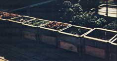

ABOVE TOP: The Integral House?which was designed to be ecologically and aesthetically pleasing?featuring many fine examples of skilled carpentry work . . . such as here, in the dwelling's entrance and downstairs meeting area. BOTTOM: Molly Jones and other IUH residents work an average of only 15 minutes per day in the garden, thanks to laborsaving techniques developed especially for urban gardeners by Bill and Helga Olkowski.